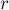
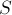
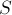
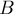
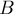
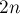
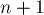
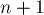

MAXimal
добавлено: 14 Sep 2010 2:07
редактировано: 6 Jan 2011 1:11
Содержание [скрыть]
Преобразование геометрической инверсии
Преобразование геометрической инверсии (inversive geometry) — это особый тип преобразования точек на плоскости. Практическая польза этого преобразования в том, что зачастую оно позволяет свести решение геометрической задачи с окружностями к решению соответствующей задачи с прямыми, которая обычно имеет гораздо более простое решение.
По всей видимости, основоположником этого направления математики был Людвиг Иммануэль Магнус (Ludwig Immanuel Magnus), который в 1831 г. опубликовал статью об инверсных преобразованиях.
Определение
Зафиксируем окружность с центром в точке радиуса . Тогда инверсией точки  относительно этой окружности называется такая точка , которая лежит на луче , а на расстояние наложено условие:
относительно этой окружности называется такая точка , которая лежит на луче , а на расстояние наложено условие:
Если считать, что центр окружности совпадает с началом координат, то можно сказать, что точка имеет тот же полярный угол, что и , а расстояние вычисляется по указанной выше формуле.
В терминах комплексных чисел преобразование инверсии выражается достаточно просто, если считать, что центр окружности совпадает с началом координат:
С помощью сопряжённого элемента можно получить более простую форму:
Применение инверсии (в точке-середине доски) к изображению шахматной доски даёт интересную картинку (справа):
Свойства
Очевидно, что любая точка, лежащая на окружности, относительно которой производится преобразование инверсии, при отображении переходит в себя же. Любая точка, лежащая внутри окружности, переходит во внешнюю область, и наоборот. Считается, что центр окружности переходит в точку "бесконечность"  , а точка "бесконечность" — наоборот, в центр окружности:
, а точка "бесконечность" — наоборот, в центр окружности:
Очевидно, что повторное применение преобразования инверсии обращает первое её применение — все точки возвращаются обратно:
Обобщённые окружности
Обобщённая окружность — это либо окружность, либо прямая (считается, что это тоже окружность, но имеющая бесконечный радиус).
Ключевое свойство преобразования инверсии — что при его применении обобщённая окружность всегда переходит в обобщённую окружность (подразумевается, что преобразование инверсии поточечно применяется ко всем точкам фигуры).
Сейчас мы увидим, что именно происходит с прямыми и окружностями при преобразовании инверсии.
Инверсия прямой, проходящей через точку
Утверждается, что любая прямая, проходящая через , после преобразования инверсии не меняется.
В самом деле, любая точка этой прямой, кроме и , переходит по определению тоже в точку этой прямой (причём в итоге получившиеся точки заполнят всю прямую целиком, поскольку преобразование инверсии обратимо). Остаются точки и , но при инверсии они переходят друг в друга, поэтому доказательство завершено.
Инверсия прямой, не проходящей через точку
Утверждается, что любая такая прямая перейдёт в окружность, проходящую через .
Рассмотрим любую точку этой прямой, и рассмотрим также точку  — ближайшую к точку прямой. Понятно, что отрезок перпендикулярен прямой, а потому образуемый им угол — прямой.
— ближайшую к точку прямой. Понятно, что отрезок перпендикулярен прямой, а потому образуемый им угол — прямой.
Воспользуемся теперь леммой о равных углах, которую мы докажем чуть позже, эта лемма даёт нам равенство:
Следовательно, угол тоже прямой. Поскольку мы брали точку любой, то получается, что точка лежит на окружности, построенной на как на диаметре. Легко понять, что в итоге все точки прямой покроют всю эту окружность целиком, следовательно, утверждение доказано.
Инверсия окружности, проходящей через точку
Любая такая окружность перейдёт в прямую, не проходящую через точку .
В самом деле, это сразу следует из предыдущего пункта, если мы вспомним об обратимости преобразования инверсии.
Инверсия окружности, не проходящей через точку
Любая такая окружность перейдёт в окружность, по-прежнему не проходящую через точку .
В самом деле, рассмотрим любую такую окружность  с центром в точке
с центром в точке  . Соединим центры и окружностей прямой; эта прямая пересечёт окружность в двух точках  и
. Соединим центры и окружностей прямой; эта прямая пересечёт окружность в двух точках  и  (очевидно, — диаметр ).
(очевидно, — диаметр ).
Теперь рассмотрим любую точку , лежающую на окружности . Угол прямой для любой такой точки, но по следствию из леммы о равных углах также прямым должен быть и угол , откуда и следует, что точка лежит на окружности, построенной на отрезке как на диаметре. Опять же, легко понять, что все образы в итоге покроют эту окружность.
Понятно, что эта новая окружность не может проходить через : иначе бы точка должна была бы принадлежать старой окружности.
Лемма о равных углах
Это вспомогательное свойство, которое было использовано выше при анализе результатов преобразования инверсии.
Формулировка
Рассмотрим любые две точки и , и применим к ним преобразование инверсии, получим точки и . Тогда следующие углы равны:
Доказательство
Докажем, что треугольники и подобны (порядок вершин важен!).
В самом деле, по определению преобразования инверсии имеем:
откуда получаем равенство:
Таким образом, треугольники и имеют общий угол, а две прилежащие к нему стороны пропорциональны, следовательно, эти треугольники подобны, а потому соответствующие углы совпадают.
Следствие из леммы
Если даны любые три точки , ,  , причём точка лежит на отрезке , то выполняется:
, причём точка лежит на отрезке , то выполняется:
причём эти углы ориентированы в разные стороны (т.е. если рассматривать эти два угла как ориентированные, то они разного знака).

Для доказательства заметим, что — это разность двух углов и  , к каждому из которых можно применить лемму о равных углах:
, к каждому из которых можно применить лемму о равных углах:
При осуществлении последнего перехода мы изменили порядок следования точек, что и означает, что мы изменили ориентацию угла на противоположную.
Конформность
Преобразование инверсии является конформным, т.е. сохраняет углы в точках пересечения кривых. При этом, если углы рассматривать как ориентированные, то ориентация углов при применении инверсии изменяется на противоположную.
Для доказательства этого рассмотрим две произвольные кривые, пересекающиеся в точке и имеющие в ней касательные. Пусть по первой кривой будет идти точка , по второй — точка (мы их устремим в пределе к ).
Очевидно, что после применения инверсии кривые будут по-прежнему пересекаться (если, конечно, они не проходили через точку , но такой случай мы не рассматриваем), и точкой их пересечения будет .
Учитывая, что точка лежит на прямой, соединяющей и , получаем, что можем применить следствие из леммы о равных углах, из которой мы получаем:
где под знаком "минус" мы понимаем то, что углы ориентированы в разных направлениях.
Устремляя точки и к точке , мы в пределе получаем, что это равенство — выражение угла между пересекающимися кривыми, что и требовалось доказать.
Свойство отражения
Если  — обобщённая окружность, то при преобразовании инверсии она сохраняется тогда и только тогда, когда ортогональна окружности
— обобщённая окружность, то при преобразовании инверсии она сохраняется тогда и только тогда, когда ортогональна окружности  , относительно которой производится инверсия ( и считаются различными).
, относительно которой производится инверсия ( и считаются различными).
Доказательство этого свойства интересно тем, что оно демонстрирует применение геометрической инверсии для ухода от окружностей и упрощения задачи.
Первым шагом доказательства будет указание того факта, что и имеют как минимум две точки пересечения. В самом деле, преобразование инверсии относительно отображает внутренность окружности в её внешность, и наоборот. Раз после преобразования не изменилась, то значит, она содержит точки как из внутренности, так и из внешности окружности . Отсюда и следует, что точек пересечения две (одна она быть не может — это означает касание двух окружностей, но этого случая, очевидно, быть по условию не может; совпадать окружности также не могут по определению).
Обозначим одну точку пересечения через  , другую — через . Рассмотрим произвольную окружность с центром в точке , и выполним преобразование инверсии относительно неё. Заметим, что тогда и окружность , и обобщённая окружность необходимо переходят в пересекающиеся прямые. Учитывая конформность преобразования инверсии, получаем, что и
, другую — через . Рассмотрим произвольную окружность с центром в точке , и выполним преобразование инверсии относительно неё. Заметим, что тогда и окружность , и обобщённая окружность необходимо переходят в пересекающиеся прямые. Учитывая конформность преобразования инверсии, получаем, что и  совпадали тогда и только тогда, когда угол между двумя этими пересекающимися прямыми прямой (в самом деле, первое преобразование инверсии, — относительно , — изменяет направление угла между окружностями на противоположное, поэтому если окружность совпадает со своей инверсией, то углы между пересекающимися прямыми с обеих сторон должны совпадать, и равны градусов).
совпадали тогда и только тогда, когда угол между двумя этими пересекающимися прямыми прямой (в самом деле, первое преобразование инверсии, — относительно , — изменяет направление угла между окружностями на противоположное, поэтому если окружность совпадает со своей инверсией, то углы между пересекающимися прямыми с обеих сторон должны совпадать, и равны градусов).
Практическое применение
Сразу стоит отметить, что при применении в расчётах нужно учитывать большую погрешность, вносимую преобразованием инверсии: могут появляться дробные числа весьма малых порядков, и обычно из-за высокой погрешности метод инверсии хорошо работает только со сравнительно небольшими координатами.
Построение фигур после инверсии
В программных вычислениях зачастую более удобно и надёжно использовать не готовые формулы для координат и радиусов получающихся обобщённых окружностей, а восстанавливать каждый раз прямые/окружности по двумя точкам. Если для восстановления прямой достаточно взять любые две точки и вычислить их образы и соединить прямой, то с окружностями всё гораздо сложнее.
Если мы хотим найти окружность, получившуюся в результате инверсии прямой, то, согласно приведённым выше выкладкам, надо найти ближайшую к центру инверсии точку прямой, применить к ней инверсию (получив некую точку ), и тогда искомая окружность будет иметь диаметр .
Пусть теперь мы хотим найти окружность, получившуюся в результате инверсии другой окружности. Вообще говоря, центр новой окружности — не совпадает с образом центра старой окружности. Для определения центра новой окружности можно воспользоваться таким приёмом: провести через центр инверсии и центр старой окружности прямую, посмотреть её точки пересечения со старой окружностью, — пусть это будут точки и . Отрезок образует диаметр старой окружности, и легко понять, что после инверсии этот отрезок по-прежнему будет образовывать диаметр. Следовательно, центр новой окружности можно найти как среднее арифметическое точек и .
Параметры окружности после инверсии
Требуется по заданной окружности (по известным координатам её центра  и радиусу ) определить, в какую именно окружность она перейдёт после преобразования инверсии относительно окружности с центром в и радиусом .
и радиусу ) определить, в какую именно окружность она перейдёт после преобразования инверсии относительно окружности с центром в и радиусом .
Т.е. мы решаем задачу, описанную в предыдущем пункте, но хотим получить решение в аналитическом виде.
Ответ выглядит в виде формул:

где
Мнемонически эти формулы можно запомнить так: центр окружности переходит "почти" как по преобразованию инверсии, только в знаменателе помимо появилось ещё вычитаемое .
Выводятся эти формулы ровно по описанному в предыдущем пункте алгоритму: находятся выражения для двух диаметральных точек и , затем к ним применяется инверсия, и затем берётся среднее арифметическое от их координат. Аналогично можно посчитать и радиус как половину длины отрезка .
Применение в доказательствах: задача о разбиении точек окружностью
Даны  различных точек на плоскости, а также произвольная точка , отличная от всех остальных. Доказать, что найдётся окружность, проходящая через точку , такая, что внутри и вне неё будет лежать одинаковое число точек набора, т.е. по  штук.
штук.
Для доказательства произведём преобразование инверсии относительно выбранной точки (с любым радиусом, например, ). Тогда искомой окружности будет соответствовать прямая, не проходящая через точку . Причём по одну сторону прямой лежит полуплоскость, соответствующая внутренности окружности, а по другую — соответствующая внешности. Понятно, что всегда найдётся такая прямая, которая разбивает множество из точек на две половины по точек, и при этом не проходит через точку (например, такую прямую можно получить, повернув всю картину на любой такой угол, чтобы ни у каких из рассматриваемых  точек не совпали координаты
точек не совпали координаты  , а затем просто взяв вертикальную прямую между -ой и -ой точками). Эта прямая соответствует искомой окружности, проходящей через точку , а значит, утверждение доказано.
, а затем просто взяв вертикальную прямую между -ой и -ой точками). Эта прямая соответствует искомой окружности, проходящей через точку , а значит, утверждение доказано.
Применение при решении задач вычислительной геометрии
Замечательное свойство геометрической инверсии — в том, что во многих случаях она позволяет упростить поставленную геометрическую задачу, заменяя рассмотрение окружностей только рассмотрением прямых.
Т.е. если задача имеет достаточно сложный вид различных операций с окружностями, то имеет смысл применить ко входным данным преобразование инверсии, попытаться решить полученную модифицированную задачу без окружностей (или с меньшим их числом), и затем повторным применением инверсии получить решение исходной задачи.
Пример такой задачи описан в следующем разделе.
Цепочки Штейнера
Даны две окружности и  , одна находится строго внутри другой. Затем рисуется третья окружность
, одна находится строго внутри другой. Затем рисуется третья окружность  , касающаяся этих двух окружностей, после чего запускается итеративный процесс: каждый раз рисуется новая окружность так, чтобы она касалась предыдущей нарисованной, и первых двух. Рано или поздно очередная нарисованная окружность пересечётся с какой-то из уже поставленных, или по крайней мере коснётся её.
, касающаяся этих двух окружностей, после чего запускается итеративный процесс: каждый раз рисуется новая окружность так, чтобы она касалась предыдущей нарисованной, и первых двух. Рано или поздно очередная нарисованная окружность пересечётся с какой-то из уже поставленных, или по крайней мере коснётся её.
Случай пересечения:
Случай касания:

Соответственно, наша задача — поставить как можно больше окружностей так, чтобы пересечения (т.е. первого из представленных случаев) не было. Первые две окружности (внешняя и внутренняя) фиксированы, мы можем лишь варьировать положение первой касающейся окружности, дальше все касающиеся окружности ставятся однозначно.
В случае касания получающая цепочка окружностей называется цепочкой Штейнера.
С этой цепочкой связано так называемое утверждение Штейнера (Steiner's porism): если существует хотя бы одна цепочка Штейнера (т.е. существует соответствующее положение стартовой касающейся окружности, приводящее к цепочке Штейнера), то при любом другом выборе стартовой касающейся окружности также будет получаться цепочка Штейнера, причём число окружностей в ней будет таким же.
Из этого утверждения следует, что и при решении задачи максимизации числа окружностей ответ не зависит от позиции первой поставленной окружности.
Доказательство и конструктивный алгоритм решения следующие. Заметим, что задача имеет очень простое решение в случае, когда центры внешней и внутренней окружностей совпадают. Понятно, что в этом случае число поставленных окружностей никак не будет зависеть от первой поставленной. В этом случае все окружности имеют одинаковый радиус, и число их и координаты центров можно посчитать по простым формулам.
Чтобы перейти к этой простой ситуации из любой подаваемой на вход, применим преобразование инверсии относительно некоторой окружности. Нам нужно, чтобы центр внутренней окружности передвинулся и совпал с центром внешней, поэтому искать точку, относительно которой будем брать инверсию, надо только на прямой, соединяющей центры окружностей. Используя формулы для координат центра окружности после применения инверсии, можно составить уравнение на положение центра инверсии, и решить это уравнение. Тем самым мы от произвольной ситуации можем перейти к простому, симметрическому случаю, а, решив задачу для него, повторно применим преобразование инверсии и получим решение исходной задачи.
Применение в технике: прямило Липкина-Поселье
Долгое время задача преобразования кругового (вращательного) движения в прямолинейное оставалась весьма сложной в машиностроении, удавалось находить в лучшем случае приближённые решения. И лишь в 1864 г. офицер инженерного корпуса французской армии Шарль Никола Поселье (Charles-Nicolas Peaucellier) и в 1868 г. студент Чебышёва Липман Липкин (Lipman Lipkin) изобрели это устройство, основанное на идее геометрической инверсии. Устройство получило название "прямило Липкина-Поселье" (Peaucellier–Lipkin linkage).
Чтобы понять работу устройства, отметим на нём несколько точек:
Точка совершает вращательное движение по окружности (красного цвета), в результате чего точка необходимо движется по прямой (синего цвета). Наша задача — доказать, что точка — суть инверсия точки относительно центра с некоторым радиусом .
Формализуем условие задачи: что точка жёстко закреплена, отрезки и совпадают, и также совпадает четвёрка отрезков  , ,
, ,  , . Точка движется вдоль окружности, проходящей через точку .
, . Точка движется вдоль окружности, проходящей через точку .
Для доказательства заметим вначале, что точки , и лежат на одной прямой (это следует из равенства треугольников). Обозначим через точку пересечения отрезков  и . Введём обозначения:
и . Введём обозначения:
Нам нужно показать, что величина :
По теореме Пифагора получаем:
Возьмём разность этих двух величин:
Таким образом, мы доказали, что , что и означает, что — инверсия точки .